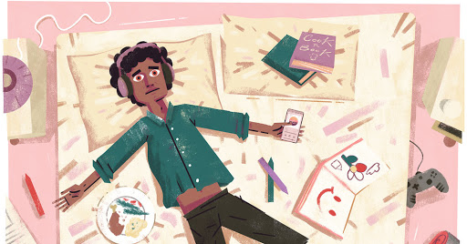

×
Home
General
Databases
Online Support Groups
Personal Coping
Resources Near You
Spiritual & Religious
Christianity
Judaism
Islam
Gathering
Planning Ahead
Kids & Young Adults
Voices
About
willow
Share a resource
voices
conversations about loss & grief, including articles & commentaries
NYT | These Are The Bedside Concerts Comforting Patients
5.30.2020

NYT | Stop Trying To Be Productive
4.1.2020
NYT Opinion | Trouble Focusing? Not Sleeping? You May Be Grieving.
4.9.2020
WBUR | Applauding Nurses From The Windows, Exploiting Them On The Job
4.30.2020
NYT Opinion | We’re All Grieving. This Is How We Get Through It.
4.22.20
Atlantic | How the Coronavirus Will Change Young People's Lives
4.13.20
NYT Opinion | To Philosophize is to Learn How to Die
3.11.20
NPR | Coronavirus Has Upended Our World. It's OK To Grieve
3.26.20
NPR | Funeral Homes Change Their Practices In Response To Coronavirus
3.20.22